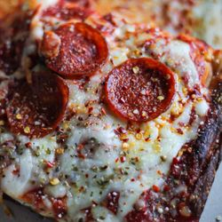

Pepperoni Pizza
Credit - Slices by Tony Yelp
Nothing beats a classic slice of pepperoni pizza!
This blog highlights great food and drink options near campus. Students often need quick, affordable, and tasty meals between classes. The locations featured here are all within walking distance of the Petty building. Each recommendation includes favorite dishes and helpful details.
Credit - Slices by Tony Google Maps
Slices Pizza by Tony is a casual, student-favorite pizza spot located at 401 Tate Street in Greensboro, just off the busy Tate Street corridor near UNCG. The restaurant serves authentic New York style hand-tossed pizzas with a variety of specialty and classic toppings, along with salads, strombolis, and appetizers in a friendly, laid-back atmosphere. Hours are 11a-10p every day except Sunday, making it a great spot for lunch or dinner after class. Known for its welcoming staff and quality pizzas, it's a popular place for both dine-in and take-out.
Credit - Slices by Tony Yelp
Nothing beats a classic slice of pepperoni pizza!
Credit - slicesbytony.com
A fresh house salad goes great with pizza or pasta.

Credit - slicesbytony.com
Cannoli, a sweet fried pastry dough filled with a soft cream.
Credit - https://universityunions.utexas.edu/panda-express
Panda Express is a chain Chinese restaurant with favorite American Chinese dishes; they are known for their oragne chicken. Panda Express is located under the cafeteria and their hours are from 9:30am to 10:00pm every day.

Credit - pandaexpress.com
Panda's Orange Chicken is their most popular dish. It is a sweet and savory orange sauce on fried chicken bites.

Credit - pandaexpress.com
Crispy beef, bell peppers, and onions in a sweet-tangy sauce.

Credit - pandaexpress.com
Prepared steamed white rice with soy sauce, eggs, peas, carrots, and green onions.
Credit - https://www.shopblakeney.com/stores/salsaritas/
Salsarita's is a heavily customizable mexican joint serving burritos, bowls, quesadillas, and tacos. It is conveniently located inside the EUC food court. Salsarita's hours of operation are 10am to 7pm Monday through Friday.
Credit - https://salsaritas.com/locations/north-carolina/jefferson-village/
Loaded burrito called the quesarito.
Credit - https://order.salsaritas.com/store/86/Salsarita's%20Greensboro/63641/Entr%C3%A9es/61237795/Salad
A crunchy taco shell filled with your choice of protein and other fresh toppings on lettuce.
Credit - https://order.salsaritas.com/store/86/Salsarita's%20Greensboro/27703/Sides%20%26%20Extras/10926287/Chips%20%26%20Salsa
One serving of chips with your choice of salsa.